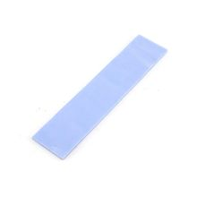

Термопрокладка 70×22×1 мм
МеханикаКатегория
Механика
Тип
термопрокладка
Размер
70 × 22 × 1 мм
Назначение
теплоотвод и заполнение теплового зазора
Материал основы
силиконовая эластичная основа (типично)
Наполнитель
теплопроводящий наполнитель (типично)
Состояние
мягкий термоинтерфейсный лист/вырезка
Применение
между чипом и радиатором/корпусом
Кратко
Термопрокладка размером 70×22×1 мм — это мягкий термоинтерфейсный материал для передачи тепла между нагревающимся компонентом и радиатором или корпусом.
Описание
Используется там, где нужно заполнить зазор и обеспечить тепловой контакт без жёсткого прижима. Обычно такие прокладки делают из силиконовой основы с теплопроводящим наполнителем; точные электрические и тепловые параметры зависят от конкретного производителя и серии. Формат 70×22×1 мм указывает только на геометрию листа или вырезанной заготовки, а не на бренд или конкретную модель. Применяется в электронике, источниках питания, LED-модулях, видеокартах, материнских платах и другой технике с тепловыделяющими элементами.
id hw-2026-028